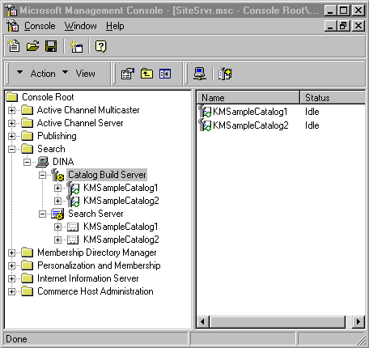
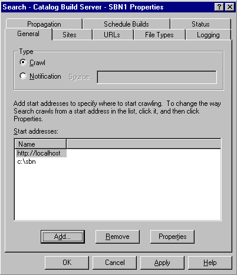
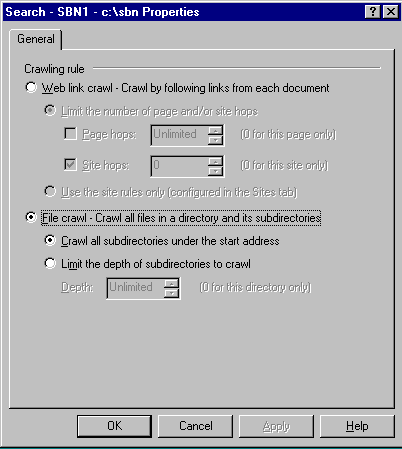
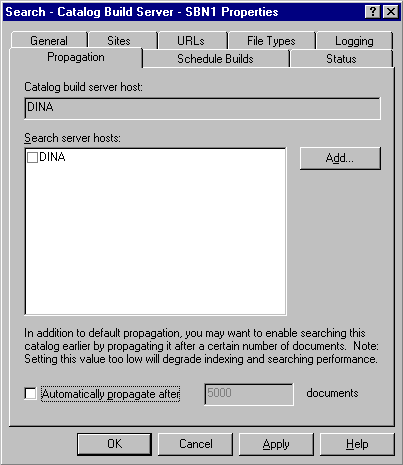
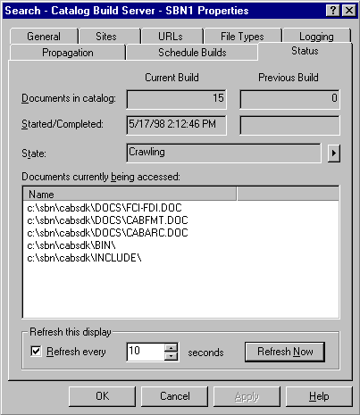
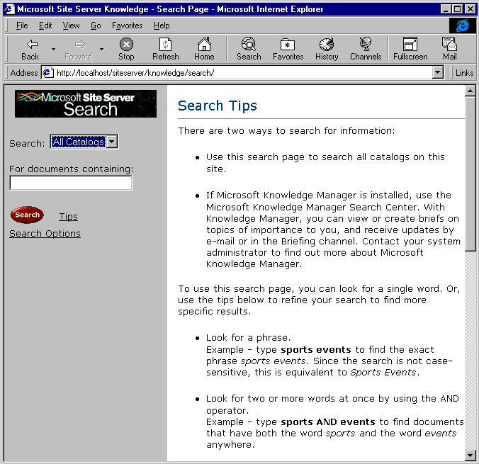

|
| ||
|
| ||
Dina Berry
15 Seconds
June 19, 1998
Contents
Introduction
How Search Uses Index Server
Content Sources You Can Search
Creating a Search Catalog
Searching the Catalog
Performance Issues
Summary
Return to Site Server 3.0 Overview page
With the glut of information available on the Internet, a
Web site must have a superior searching mechanism to help
users quickly find what they are looking for and encourage
return visits. Microsoft Index Server was the first step in
that direction. Site Server 3.0 Search  enables
a Web site to gather and catalog information from just
about anywhere and make it available to customers through
an effective search page.
enables
a Web site to gather and catalog information from just
about anywhere and make it available to customers through
an effective search page.
This article assumes that you have a working knowledge of
Web site administration and server hardware and software.
No previous knowledge of Site Server Search is assumed, but
I recommend that you download the Site Server SDK  for more
detailed information and examples on Site Server and Site
Server Search.
for more
detailed information and examples on Site Server and Site
Server Search.
Implementing Search on your site consists of two primary tasks.
The first step is to define the catalog. The catalog is a searchable unit of information that is defined by where that information is originally stored, what subset of the entire information is indexed, and how often the information is re-crawled.
Once you have defined the catalog, you need to get the catalog built so that it can be propagated. Propagation is the ability to have a single machine gather new or updated information and duplicate that information onto many machines for your customers to search. The process of building the catalog requires the crawler to go through your set of information, index the information, and then propagate it to other Search servers. After the catalog has been propagated, it is available to your users to search from an Active Server Pages (ASP) page.
Index Server, available in Microsoft Internet Information Server 4.0, provides elementary search capabilities for your Web site. Index Server works by tracking file changes in specified directories. When a file is added to one of those directories, Index Server looks at the file for file properties and adds those properties to its catalog. The index is then searchable from an ASP page.
Site Server Search uses Index Server features to find file properties and store them in the catalog. Index Server can only monitor a file system location. The Search server retrieves the file or information from its original location and uses the Index Server functionality to index the files. Once the catalog is built, Search propagates the catalog to other Search servers. Search doesn’t use Index Server itself, just its features. You can stop Index Server while building a catalog to reduce the requests the machine has to fulfill while building the catalog.
File properties are key pieces of information such as the title, text, size, and date of a document. All files have similar properties, but properties are stored in different locations depending on the file type. Some files have properties that only make sense for that file type. For example, a title in HTML is within the <TITLE> tag while a Microsoft Office document keeps the title in the document properties. An image document will have information about the compression type while Office and HTML documents do not need compression type properties. Index Server uses the IFilter interface to find those properties. IFilter is a specification for how to write filters and return file property information. Index Server chooses the IFilter to use based on the file’s extension. Search lets you define what type of files to gather or ignore by the file extension as well.
The strength of Site Server Search is its ability to gather information from very different data stores. With Search, you can catalog information from a file system, a Web site, a Microsoft Exchange Server, or from an open database connectivity (ODBC) data source. Each of these data stores may require authentication so the Search crawler must be configured to have the necessary permissions to those data stores.
To illustrate how easy it is to create a Search catalog, you need to see it for yourself. In the following example, we will create a catalog of both Web- and file-based content, build the catalog, and verify that the catalog is propagated.
Step 1. Open the Site Server Administration tool for MMC (Microsoft Management Console).
To open this application, go to the Start menu and choose Programs, Microsoft Site Server, Administration, and Site Server Service Admin (MMC). Open the tree at the Search node until the machine name is visible. If you double-click the machine name, you'll see two nodes called Catalog Definition and Search Server. The default installation of Site Server defines two catalogs for you. These appear in Figure 1. Because these catalogs are built and propagated to this machine, the catalogs show up in both the Catalog Definition node and the Search Server node.

Figure 1. Site Server Search Administration in MMC
Step 2. Create the catalog
Right-click the Catalog Definition node, and choose New Catalog Definition. A dialog box will appear and ask for the catalog name. In this example, the catalog is SBN1. The next window in the catalog definition process is displayed in Figure 2. The figure shows two sources to search. The first is a file location and the second is a Web address.

Figure 2. General tab of Catalog Definition property sheet
Step 3. Configure an information location
The properties for a file or Web crawl are set on the same tab and displayed in Figure 3. The properties for the file location can be set to search all subdirectories or to crawl to a specified depth. The properties for the Web location can be set to the entire site (default), a certain number of pages, or a certain number of Web-site hops. ( If you link to another site, and that site links to another site and so on, the number of hops is the number of links Serach should follow.) If you want to search a portion of your site, set the virtual directories to be included and excluded on the Sites tab of the Catalog Definition property sheet.

Figure 3. File/Web crawl properties
Step 4. Propagation
The next step is to choose what server will receive the built catalog. Figure 4 shows the Propagation tab of the Catalog Definition property sheet. In this example, I have one machine name (the local machine) in the list. For a site hosted by multiple machines, where each machine needs to provide access to the search catalog, the propagation list should contain all the servers.

Figure 4. Propagation properties
Step 5. Building the catalog
At this point, the catalog is defined with enough information that it can be built. Go to the Status tab. On the arrow to the right of the status box in Figure 5, choose the Build option from the list of options. The status will tell you how many files have been crawled and when the process started.

Figure 5. Building the catalog
Step 6. Searching the catalog
Once the catalog is propagated, you can test the catalog by searching for a keyword or phrase from the Search Server’s catalog node in the MMC. Figure 6 illustrates using the search feature for the term "cab." The right-hand side of the MMC shows the location of the search page that my customers can use. I can also search for a term and see the results.
The example above describes a simple search catalog. There are more options available to you when defining your catalog. On the Schedule Builds tab of the Catalog Definition properties, you can schedule either a full build or an incremental build. A full build looks at every file even if it hasn't changed since the last build. An incremental build looks for new files or files that have changed since the last build and only indexes those files. Use the incremental build to decrease the time the build takes. After several incremental builds, schedule a full build.
You can also use the scheduler to define when the content should be rebuilt. If you want to build your catalog from a staging server, you will need to map from the staging server location to the live server location. Use the URLs tab of the Catalog Definition for this feature. If you want to crawl or ignore certain file extensions, use the File Types tab of the Catalog Definition for this feature. The default file types include: ASP, DOC, EXCH, HTM, HTML, PPT, TXT, and XLS.
Notifications
You may want a file crawled immediately after it is changed
or added, instead of looking for file changes at a
regularly scheduled time. To do this, notify the Search
server of those changes. This is the second catalog type of
Notification shown in Figure 2. This is a powerful feature
because it will save machine resources by doing only the
work required instead of looking at every file on the
schedule. For more information about notification sources,
look at the DirMon sample in the Site Server 3.0 SDK  .
.
Now that we have built the catalog and searched it from the Site Server Admin MMC, you need to let your customers search it. The quick, easy way is to use the Search page provided for you, which is listed on the right-hand side of Figure 6.
Figure 7 shows the default Search page available for all propagated catalogs on this server. The search can be limited to a specific catalog by choosing the catalog name in the drop-down list or include all catalogs on the server. You don’t need to change anything on the page for search to work.

Figure 7. Default Search page
Figure 8 shows the results of the same query used in Figure 6.At this point, you won’t have to write a single line of code. All the work has been in defining the catalog. The ability to search the catalog was available as part of the installation of Site Server.
The Search page in Figure 7 was developed using the Search object model (documented in the Site Server 3.0 SDK). This object model enables programmers to create their own search pages. To develop your own search page, I’ll assume you understand the ActiveX® Database Objects (ADO) provided with Internet Information Server (IIS) 4.0. These objects enable you to define a query, run the query, and return a result set in ASP. Site Server Search uses these objects to query the search catalog.
To search the catalog, you should know the name of the catalog, the columns you want to display, the sort order, and the term to search for. There are a lot more properties you can set but these are the basic properties to set for a simple search. Once you set these properties, you execute the query and display the results of the record set.
The following code illustrates how simple it is to write a search page. The Search object is created, a few properties are set, the query is executed, and the result set is displayed. The list of columns available to search and display is noted in the product documentation. There are over ten samples of Search ASP pages (from simple to complex) provided in the product documentation. You can develop search ASP pages to deal with issues such as duplicate entries, sorting, grouping, and limiting the number of records to return. You can alter the noise words (such as "the," "is," and "to") to ignore words that are ubiquitous in your site's content. By adding words to the noise list, you can speed up the query time.
Simple Search
set Q = Server.CreateObject("MSSearch.Query")
Q.SetQueryFromURL(Request.QueryString)
Q.Catalog = Request("ct")
Q.Columns = "DocTitle, DocAddress, FileName"
set RS = Q.CreateRecordSet("sequential")
Do while not RS.EOF
Response.Write "<a href = " & RS("DocAddress") & ">"
Response.Write RS("DocTitle") & ", "
Response.Write RS("FileName")
Response.Write RS "</a>"
RS.MoveNext
Loop
Set RS = nothing
Set Q = nothing
As a Web site administrator, you may want to use the IIS log file to store information about customers’ searches. Once the information is in the log, you can use Site Server's built-in Analysis features to generate a report about how your customers used the search page.
The IIS 4.0 Response object’s AppendToLog method is required to add search information to your log file. Search provides four variables to add information to the log file: the catalog, the query, the start hit, and the number of results found. Because some of these values may have commas and/or spaces, you will need to programmatically change these. A comma should be converted to a "+" sign. A space should be converted to "%20". Once these are converted, the information can be added to the log file. The code below shows how to add search information to a log file. The code uses the "&" (ampersand) to append parameters to the query string. The listing assumes that the search term is passed to the search page with a parameter name of "qu".
Adding Search information to a log file.
LogInfo = "&MSS.request.Search Catalog=" & Q.Catalog
LogInfo = "&MSS.request.Search Start Hit=" & Q.StartHitLog
LogInfo = "&MSS.request.Search Query=" & Request("qu")
LogInfo = "&MSS.request.Search Row Count="& RS.Properties("RowCount")
LogInfo = Replace(LogInfo, ",", "+")
Loginfo = Replace(LogInfo, " ", "%20")
Response.AppendToLog InfoToLog
Building and searching the catalog are both computer-intensive tasks. If you have the physical machines available, you should separate the processes by using different machines for each. A single machine can build the catalogs and propagate the catalogs to the live search servers.
When building the catalog, you can set the time between the request for each file. For an Internet site, you may want to set more time between each requested document so that you don’t overwhelm the Internet server. On a local network, you can set a shorter time between each document. You will also want to adjust the timeout value based on the local or Intranet server. The timeout value means how long the crawler will wait for a file before going on to the next file request.
Because building the catalog is very computer-intensive, you may want to control how many system resources the crawler uses. If the machine is used for more than the building of the catalogs, you would want to lower the amount of resources used. If the machine is dedicated to building the catalog, you could configure the crawler to use more of the system resources.
When the Search server finds files that match the query, it needs to compare the files against a lot of columns in each row of the configuration table. Some of these columns may not be interesting and could be removed. Removing columns from the search schema will decrease the time required to answer most queries.
Site Server Search is a great tool for any Web site. Search is so easy to use that you don’t even have to know how to program ASP to use it. But for those who need to customize their gathering and searching tasks, all the features and programming objects are available to give your customers the information they are looking for when they visit your site.
Dina Berry is a developer and writer for
http://www.signmeup.com  , an Internet
Marketing company. She is also a frequent contributing
author to http://www.15seconds.com
, an Internet
Marketing company. She is also a frequent contributing
author to http://www.15seconds.com  . She can be
reached at
dina@signmeup.com.
. She can be
reached at
dina@signmeup.com.
Did you find this material useful? Gripes? Compliments? Suggestions for other articles? Write us!
© 1999 Microsoft Corporation. All rights reserved. Terms of use.